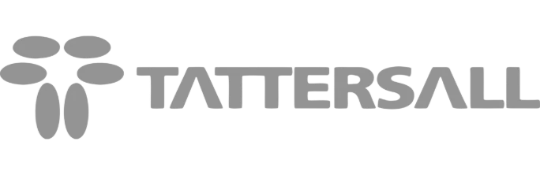
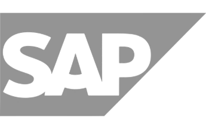
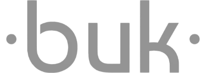
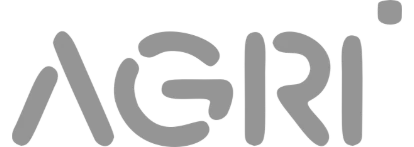

+60k
Hectáreas desarrolladas en conjunto para distintos rubros
Ver másDiseñamos, implementamos y operamos proyectos agrícolas bajo criterios ESG de manera sustentable con gestión institucional trazable y altos estándares de producción.
TerraTech Agro es una gestora agroindustrial que integra su vasta experiencia en el sector agroexportador, desde una gestión hídrica, administración financiera empresarial y estructuración de predios con producción, control y gestión sustentable entre otros.
Toca cada pilar para ver su detalle.
+60k
Hectáreas desarrolladas en conjunto para distintos rubros
Ver másKPIs
Gestión agrícola con trazabilidad
Ver más+25
Años de alianzas y proveedores estratégicos
Ver másDeterminación de presupuestos
Definición de plan de cuentas
Centralización y control de adquisiciones
Control de inventario
Control de maquinaria
Control de riego
Trazabilidad en asignación de aplicaciones y faenas
Reportería mensual con KPI's de gestión económicos



